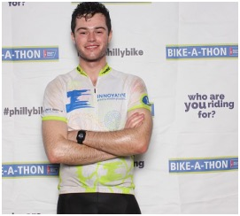
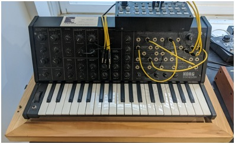

Colin Murphy
Experienced researcher and scientist with skills necessary to participate in dynamic, multidiscipline domains that lie at the intersection of physical science, computer science, and statistics. Advocating for and leading the integration of Data Science and machine learning methodologies in novel and complex systems.
Experience
- Established model development lifecycle and the deployment scheme for at-scale machine learning applications.
- Conducted data analysis as needed for New Product Development and Manufacturing Sustainability — ANOVAs, sampling plans, specification alignment, designed experiments as well as more advanced techniques like machine learning for predictive modelling and interactive data visualizations.
- Developed data tools and data applications for use in production and R&D.
- Conducted experimental design and hypothesis testing for product development and product sustainability.
- Led interdisciplinary team of scientists to introduce data collection and exploration for 2 implant cleaning systems.
- Built data processing pipeline for industrial manufacturing lines. Built random forest classification models to predict the presence of implants in 12 different chemical processing stages.
- Designed LSTM model for time-series forecasting of solution chemistry — predicting downstream rinse water conductivity for process optimization/sustainability.
- Parse through archived pdf documents to collect quality related information and build a relationship graph tool.
- Tasked with managing the Residual Manufacturing Materials Management (RM3) program for all U.S. based manufacturing locations.
- Manage and coordinate medical device validation testing projects with both internal and external customers.
- Analyze data and prepare test reports for established Quality Assurance programs.
- Perform investigate lab testing of medical devices to evaluate cleanliness.
Projects:
- Patterned Arrays of Gold Nanoframes Using High Resolution E-Beam Lithography (Renewable Energy Lab, College of Engineering)
- Optical detection of hot electron induced dissociation of H2 on gold nanoparticles (Borguet Research Group, Department of Chemistry)
Education
GPA: 3.95
Coursework:
- DSCI 511 Data Acquisition and Pre-Processing
- DSCI 521 Data Analysis and Interpretation
- DSCI 631 Applied Machine Learning for Data Science
- DSCI 591 & 592 Data Science Capstone I & II
- CS 510 Intro to Artificial Intelligence
- CS 590 Privacy
- CS 613 Machine Learning
- CS 615 Deep Learning
- CS 660 Data Analysis at Scale
- INFO 608 Human-Computer Interaction
- INFO 648 Healthcare Informatics
- INFO 633 Information Visualization
GPA: 3.70 · Phi Beta Kappa
Coursework:
- General Chemistry, Organic Chemistry, Physical Chemistry, Inorganic Chemistry, Analytical Chemistry, Biochemistry, Crystallography
- Database & File Management Systems (SQL)
- Program Design/Abstract (Java)
- Problem Solving & Programming (Python)
- Statistics, Calculus, Linear Algebra
Skills
Programming Languages & Tools
Python
Jupyter
AWS
NumPy
PostgreSQL
Anaconda
Git
Data Science & Machine Learning
Scikit-learn
Keras / TensorFlow
PyTorch
Pandas
Plotly
Seaborn / Matplotlib
Tableau
Gephi
Documentation & Communication
Markdown
LaTeX
Overleaf
HTML
Publications & Project Papers
Publications
NewsTweet: A Dataset of Social Media Embedding in Online Journalism.
Mujib, M. I., Heidenreich, H. S., Murphy, C. J., Santia, G. C., Zelenkauskaite, A., & Williams J. R. Arxiv Preprint (2020).
Plastically deformed Cu-based alloys as high-performance catalysts for the reduction of 4-nitrophenol.
Menumerov, E., Gilroy, K. D., Hajfathalian, M., Murphy, C. J., McKenzie, E. R., Hughes, R. A., & Neretina, S. Catalysis Science & Technology 6, no. 14 (2016): 5737-5745.
Project Papers
E-Weaver: Sustainable Clothing Aggregation and Recommendation System (Part 2: Modeling)
(Colin Murphy, Matthew Merenich, Dayun Piao, Zifeng Wang) — paper available upon request
Classifying Short Text Reddit Posts
(Colin Murphy, Mithila Guha, & Angela Mastrianni)
Impact of the COVID-19 Pandemic on BIPOC populations
(Colin Murphy, Madhumitha Santhana Krishnan, Nicholas Lawrence, Joshua Lister, & Rebecca Topper)
Interests
Outside of the digital realm I enjoy staying active by running, but my true passion is for cycling. I have been an avid cycler for over 10 years and prefer it as a mode of transportation in the city. I have also participated in the American Cancer Society Philadelphia Bike-a-thon (fundraising event) for the past 10 years — biking 65-100 miles from Philadelphia to Atlantic City.
I also like to "geek out" over analog synthesizers and producing different types of ambient music by experimenting with different soundscapes.
Like many others of my generation, I am very conscious of our impact on our environment and strive to incorporate sustainability into every aspect of my personal life, while also advocating for a more sustainable society as a whole.


Awards & Certifications
Computational Data Science Certification — Drexel University
Mental Health First Aid Certification — National Council for Behavioral Health
Honorable Mention (top 5) — Temple University Undergraduate Research Symposium 2014 & 2015
Temple University — Shirley and Bernard Brown Scholarship — 2015